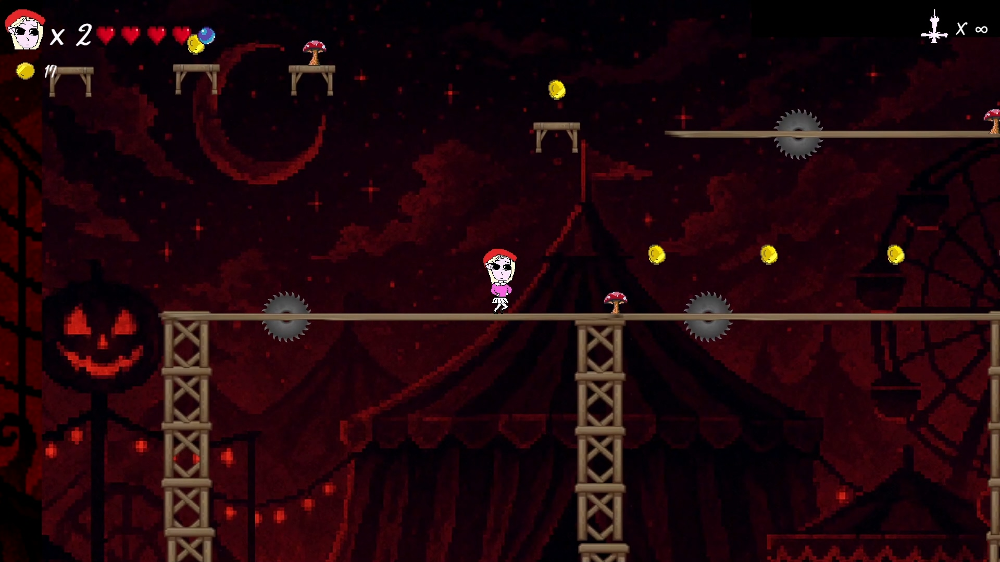
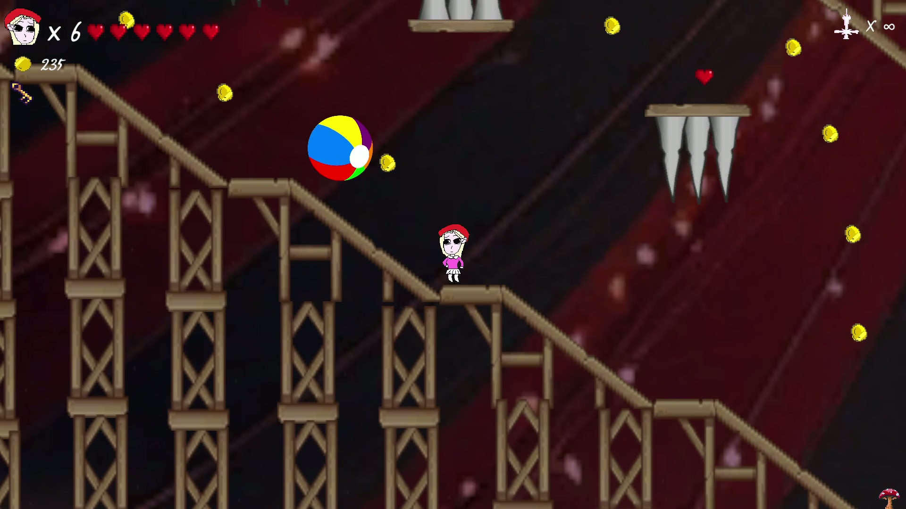
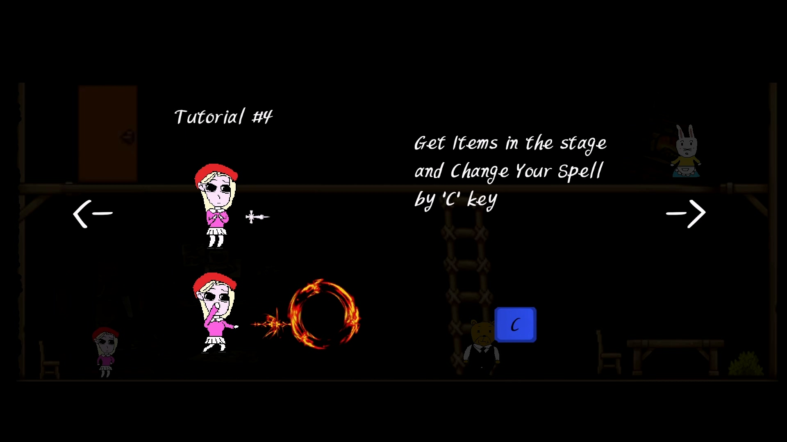
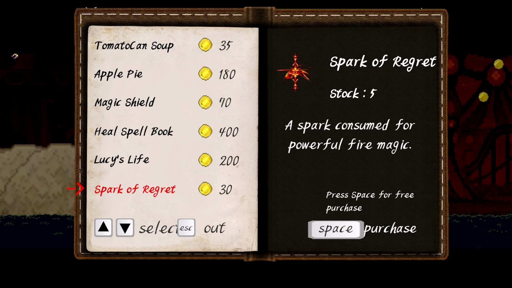
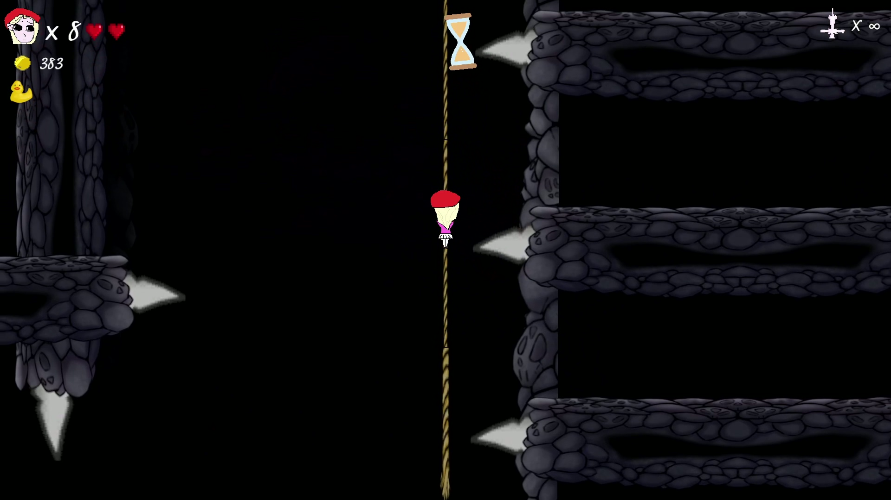
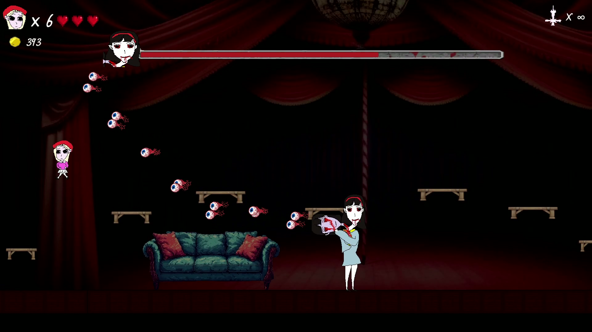
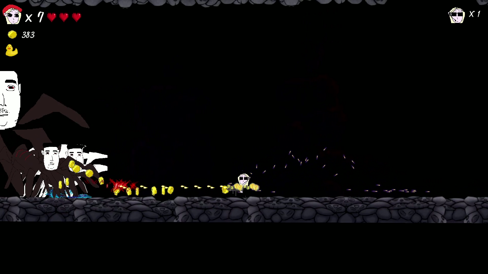
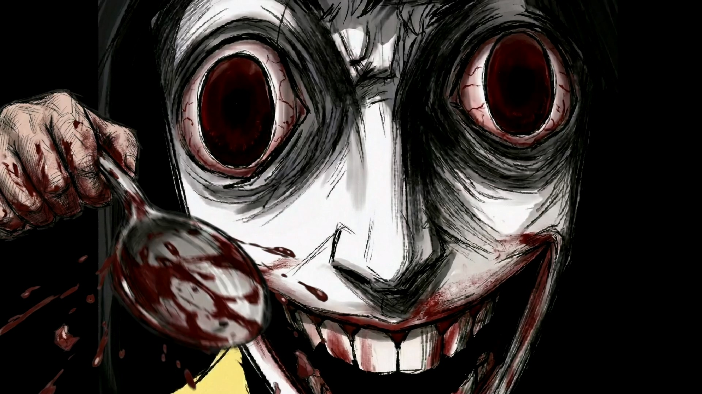

A twisted fairy tale. A psychological horror platformer.
A twisted fairy tale you can't wake up from.
Lucy has forgotten who she is. Trapped in a nightmare that refuses to end, she runs, leaps and fights through whimsical stages crowded with colorful monsters — charming on the surface, wrong underneath. A 2D pixel art psychological horror platformer, made by one person.
A fairy tale with two faces. Lucy has forgotten who she is. Trapped in a nightmare that refuses to end, she runs, leaps and fights through whimsical stages crowded with colorful monsters — charming on the surface, wrong underneath.
Scattered diamonds hold her stolen memories. Each one you recover plays back a fragment of the real world — and those fragments wear a very different face. One layer at a time, a meticulously plotted story peels the fairy tale back, until the truth beneath proves crueler than any nightmare.
Lucy's Nightmare is written and built by a single author. Every character and animation you meet is drawn pixel by pixel, by hand. The free demo covers the prologue through chapter one — roughly forty minutes.
A downloadable master file (1080p, H.264) is included in the asset ZIP. Direct link: youtu.be/PguWPxA51Lk








Click any image to open the full-size file (1920×1080). All screenshots are also in the asset ZIP.
Steam capsule images in library, header and vertical formats are included in the asset ZIP.
Jeon Yeon Jun writes, draws and builds the worlds released under the NationwideSoftware name. Every character and animation you meet is drawn pixel by pixel, by hand.
Japan has a genre called iyamisu — a compound of iya (“unpleasant”) and mystery: a mystery that leaves you feeling worse than when you began. Like Kanae Minato's Confessions, these stories wrap society's infected places and the floor of human nature inside the pleasures of genre, and keep you reading to the last page. That is the lineage Lucy's Nightmare belongs to.
The work always begins at the end. The first scene isn't drawn until the last frame is decided. Genre is the doorway — what makes you open it is the grammar of horror and thriller; what waits inside is addiction and self-loathing, responsibility and repression, and the quiet cruelty people inflict without meaning to.
Lucy's Nightmare is the studio's first title, in development since 2024 and targeting a Q4 2027 release. A second work, The Love Doll, on twisted desire and salvation, follows it.
More at nationwidesoft.com
Video capture, live streaming and monetization of Lucy's Nightmare and its demo are permitted, on any platform, for any length, including full playthroughs.
No permission request, no revenue share, no content ID claims. Music in the game is either original or licensed for this use.
Attribution is appreciated but not required. A link to the Steam page is always welcome.


{kind=link}
{kind=link}
{kind=link}